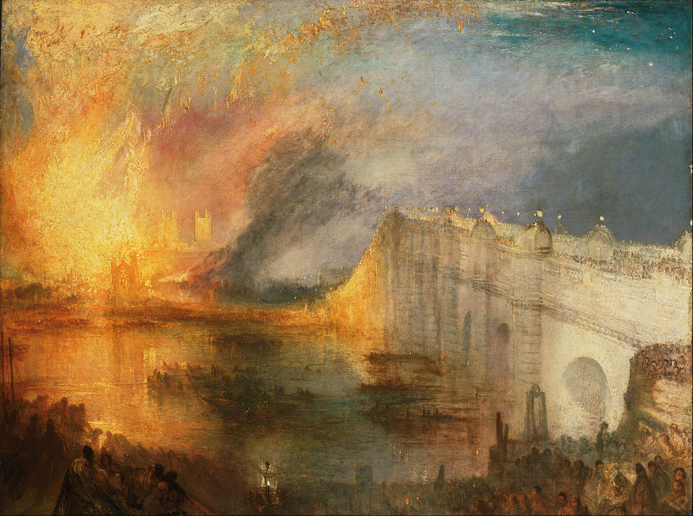

<head>
<meta charset="UTF-8" />
<meta name="keywords" content="drawing, painting" />
<meta name="description" content="drawings by Sunjy" />
<title>Sunjy</title>
<link rel="shortcut icon" type="image/x-icon" href="../../mImages/mCommon/favicon.ico" media="screen" />
<link rel="stylesheet" type="text/css" href="../../mCsses/mCommon/mCssA.css" />
<link rel="stylesheet" type="text/css" href="../../mCsses/mCommon/mCssB.css" />
<link rel="stylesheet" type="text/css" href="../../mCsses/mCommon/mCssC.css" />
<link rel="stylesheet" type="text/css" href="../../mCsses/mCommon/mCssD.css" />
<link rel="stylesheet" type="text/css" href="../../mCsses/mContent/mCssA.css" />
<link rel="stylesheet" type="text/css" href="../../mCsses/mContent/mCssB.css" />
<link rel="stylesheet" type="text/css" href="../../mCsses/mContent/mCssC.css" />
<link rel="stylesheet" type="text/css" href="../../mCsses/mContent/mCssD.css" />
</head>
<script type="text/javascript" src="../../mScripts/mContent/mContentAA.js" /></script>
<script type="text/javascript" src="../../mScripts/mContent/mContentAB.js" /></script>
<script type="text/javascript" src="../../mScripts/mContent/mContentAC.js" /></script>
<script type="text/javascript" src="../../mScripts/mContent/mContentAD.js" /></script>
<script type="text/javascript"></script> 
<script type="text/javascript">
document.write('<div class="mImgAbsolute"></div>');
/*
document.write('<p class="mFontSizeBColor" />From a white paper...</p>');
document.write('<table class="center"><tr><td>');
document.write('');
document.write('</td></tr></table>');
*/
</script>


<script type="text/javascript">
document.write('<p class="mFontSizeBColor" />The Burning of the Houses of Lords and Commons</p>');
document.write('<p class="mFontSizeSColor" />“The Burning of the Houses of Lords and Commons” by J. M. W. Turner depicts the fire that broke out at the Houses of Parliament in 1834. Turner himself witnessed the Burning of Parliament from the south bank of the River Thames, opposite Westminster.<br><br>The painting shows the Houses of Parliament overwhelmed in golden flames. The fire is consuming the chamber of the House of Commons and is illuminating the towers of Westminster Abbey.<br><br>The fire reflects in the water and on a crowd of spectators in the foreground. To the right of the painting, Westminster Bridge looms bright white from the light of the fire.<br><br>The perspective of the bridge closest to the fire is distorted, emphasizing the fire’s’ destruction.<br><br>Turner made multiple sketches using both pencil and watercolor in two sketchbooks from different vantage points, including from a boat.<br><br>Turner also painted a second painting on the same subject, from further downstream, closer to Waterloo Bridge, later in the same year 1835.<br><br>The colors and composition of these paintings may have influenced Turner’s conception of his later depiction of “The Fighting Temeraire,” which also depicts the passing of an old order.<br><br>Many of Turner’s paintings can be found in museums across the world, depict famous landscapes and seascapes.<br><br>Joseph Mallord William Turner<br><br>Joseph Mallord William Turner entered the Royal Academy of Art in 1789, aged 14, and his first watercolor was accepted for the Royal Academy summer exhibition of 1790 when Turner was 15.<br><br>From a young art student trained in executing topographical watercolors, he became one of the most original artists of his time.<br><br>Turner was a Romantic painter, printmaker, and watercolorist, today known for his vivid coloration, imaginative landscapes, and turbulent marine paintings.<br><br>As a private, eccentric, and reclusive figure, Turner was controversial throughout his career. He left over 2,000 paintings and 19,000 drawings and sketches.<br></p>');
document.write('<table class="center" /><tr><td>');
document.write('<br>The painting shows the Houses of Parliament overwhelmed in golden flames. The fire is consuming the chamber of the House of Commons and is illuminating the towers of Westminster Abbey.<br><br>The fire reflects in the water and on a crowd of spectators in the foreground. To the right of the painting, Westminster Bridge looms bright white from the light of the fire.<br><br>The perspective of the bridge closest to the fire is distorted, emphasizing the fire’s’ destruction.<br><br>Turner made multiple sketches using both pencil and watercolor in two sketchbooks from different vantage points, including from a boat.<br><br>Turner also painted a second painting on the same subject, from further downstream, closer to Waterloo Bridge, later in the same year 1835.<br><br>The colors and composition of these paintings may have influenced Turner’s conception of his later depiction of “The Fighting Temeraire,” which also depicts the passing of an old order.<br><br>Many of Turner’s paintings can be found in museums across the world, depict famous landscapes and seascapes.<br><br>Joseph Mallord William Turner<br><br>Joseph Mallord William Turner entered the Royal Academy of Art in 1789, aged 14, and his first watercolor was accepted for the Royal Academy summer exhibition of 1790 when Turner was 15.<br><br>From a young art student trained in executing topographical watercolors, he became one of the most original artists of his time.<br><br>Turner was a Romantic painter, printmaker, and watercolorist, today known for his vivid coloration, imaginative landscapes, and turbulent marine paintings.<br><br>As a private, eccentric, and reclusive figure, Turner was controversial throughout his career. He left over 2,000 paintings and 19,000 drawings and sketches.<br>" />');
document.write('</td></tr></table>');
</script>


